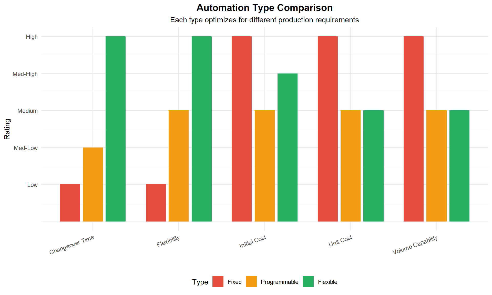
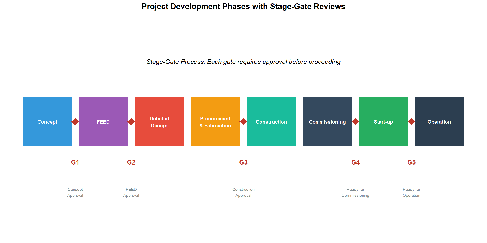
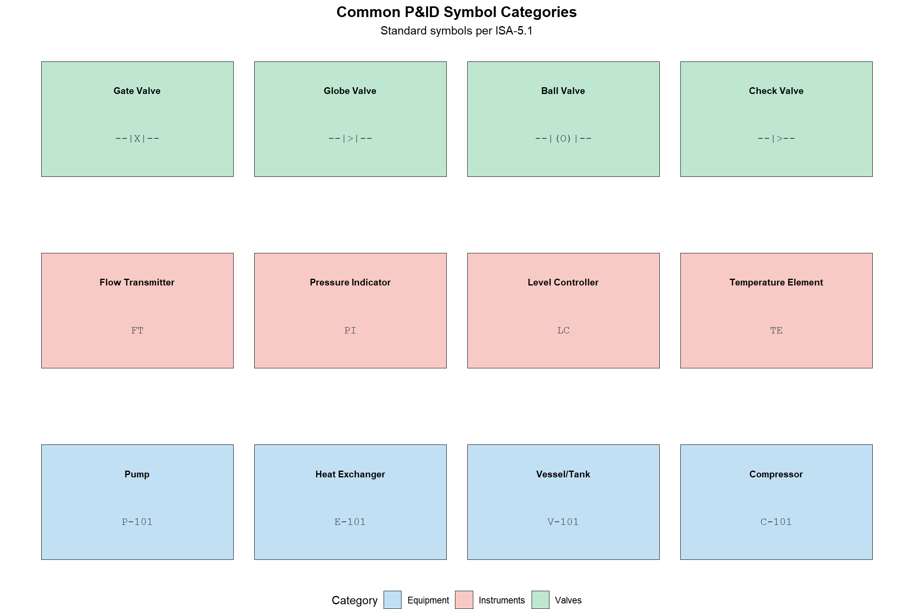
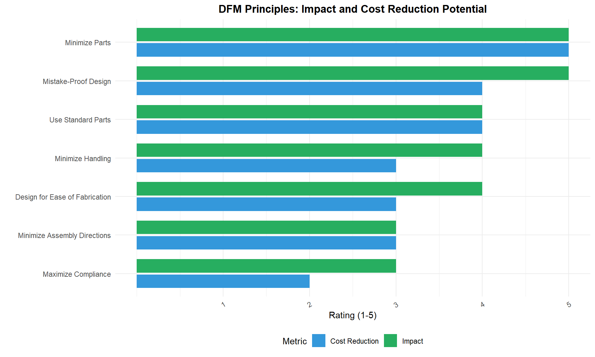
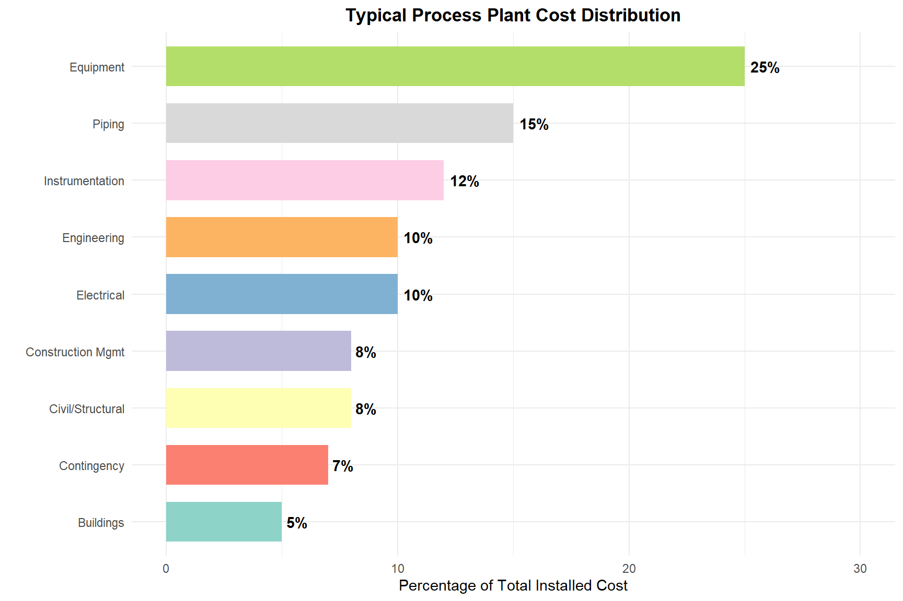
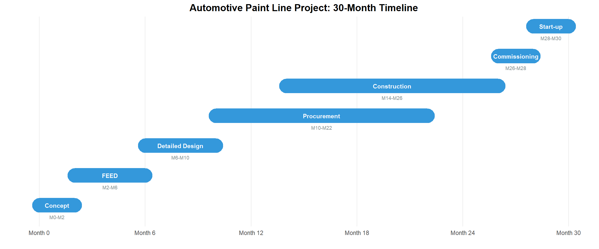

2 Process and Design
2.1 Learning Objectives
By the end of this chapter, you will be able to:
- Describe the stages of process plant project development from concept to operation
- Differentiate between fixed, programmable, and flexible automation systems
- Interpret Process Flow Diagrams (PFDs) and Piping & Instrumentation Diagrams (P&IDs)
- Explain the purpose and content of Front-End Engineering Design (FEED)
- Apply Design for Manufacturing (DFM) and Design for Assembly (DFA) principles
- Understand the role of HAZOP studies in process safety
- Identify key engineering deliverables for each project phase
2.2 Introduction to Process Engineering
Process engineering is a specialized branch of engineering that focuses on the design, optimization, and implementation of manufacturing processes and production systems. Process engineers work at the intersection of design and production, ensuring that products can be manufactured efficiently, safely, and economically.
What is the role of a process engineer?
Process engineers are responsible for:
- Designing production processes - Selecting equipment, defining sequences, optimizing flow
- Improving existing processes - Reducing waste, increasing throughput, improving quality
- Scaling up from lab to production - Taking R&D concepts to full-scale manufacturing
- Ensuring safety and compliance - Meeting regulatory and environmental requirements
- Supporting production - Troubleshooting issues, training operators
- Cost optimization - Reducing manufacturing costs while maintaining quality
2.3 Types of Manufacturing Automation
Automation is essential for achieving high productivity, consistent quality, and competitive manufacturing costs. There are three fundamental types of automation, each suited to different production scenarios.
2.3.1 Fixed Automation
Fixed automation (also called “hard automation”) uses specialized equipment designed for a specific product. The sequence of operations is determined by the equipment configuration and cannot be easily changed.
Characteristics: - Very high production rates (thousands per hour) - Low per-unit cost at high volumes - High initial capital investment - Inflexible - dedicated to one product
Examples: - Automotive transfer lines for engine blocks - Beverage bottling lines - Chemical processing plants - Paper manufacturing
# Fixed Automation Economic Analysis
# When does fixed automation make sense?
# Example: Automotive transfer line for cylinder heads
fixed_automation_cost <- 5000000 # Initial equipment cost
annual_production <- 500000 # Parts per year
fixed_cost_per_part <- 2.50 # Operating cost per part
equipment_life_years <- 10
# Calculate total cost per part including amortization
annual_equipment_cost <- fixed_automation_cost / equipment_life_years
total_annual_cost <- annual_equipment_cost + (fixed_cost_per_part * annual_production)
cost_per_part <- total_annual_cost / annual_production
cat("Fixed Automation Analysis:\n")Fixed Automation Analysis:cat("==========================\n")==========================cat(sprintf("Equipment cost: $%s\n", format(fixed_automation_cost, big.mark=",")))Equipment cost: $5e+06cat(sprintf("Annual production: %s parts\n", format(annual_production, big.mark=",")))Annual production: 5e+05 partscat(sprintf("Operating cost per part: $%.2f\n", fixed_cost_per_part))Operating cost per part: $2.50cat(sprintf("Amortized equipment cost per part: $%.2f\n", annual_equipment_cost/annual_production))Amortized equipment cost per part: $1.00cat(sprintf("Total cost per part: $%.2f\n", cost_per_part))Total cost per part: $3.502.3.2 Programmable Automation
Programmable automation allows the production equipment to be reprogrammed for different products. It’s suited for batch production where products change periodically.
Characteristics: - Medium production rates - Significant changeover time between products - Lower initial cost than fixed automation - Suitable for batch sizes of 100-10,000
Examples: - CNC machining centers - Industrial robots - PLC-controlled assembly machines - Batch chemical reactors
Discussion: When should you choose programmable over fixed automation?
Choose programmable automation when:
- Product variety - You make multiple products on the same equipment
- Volume uncertainty - Demand may shift between products
- Product evolution - Frequent design changes expected
- Lower volumes - Not enough volume to justify dedicated equipment
- Capital constraints - Can’t afford multiple dedicated lines
Example scenario: A machine shop that makes 20 different part numbers for aerospace customers would use CNC machines (programmable) rather than dedicated transfer lines (fixed) because: - Volumes per part number are low (100-1,000/year) - New part designs are introduced regularly - Flexibility to respond to customer changes is critical
2.3.3 Flexible Automation
Flexible automation can produce a variety of parts with minimal changeover time. It combines the flexibility of programmable automation with the productivity approaching fixed automation.
Characteristics: - Medium-high production rates - Very fast changeover (minutes, not hours) - High initial investment - Suitable for medium variety, medium volume
Examples: - Flexible Manufacturing Systems (FMS) - Robotic assembly cells - Automated guided vehicle (AGV) systems - Modern automotive final assembly lines
| Production Characteristic | Fixed Automation | Programmable Automation | Flexible Automation |
|---|---|---|---|
| Annual Volume | > 1,000,000 units | 1,000 - 100,000 units | 10,000 - 500,000 units |
| Product Variety | Single product | Several products in batches | Many products, mixed |
| Changeover Frequency | Rarely (years) | Weekly to monthly | Hours to minutes |
| Initial Investment | Very High ($5M+) | Medium ($500K-$2M) | High ($2M-$10M) |
| Operating Cost | Lowest per unit | Medium per unit | Low-medium per unit |
| Best Industries | Automotive, Beverage, Chemical | Job shops, Aerospace, Medical | Electronics, Automotive suppliers |
List industries where you can find various automated process systems
By automation type:
Fixed Automation: - Oil refineries - Chemical plants - Food processing (high-volume) - Beverage bottling - Automotive powertrain - Steel mills - Paper/pulp mills
Programmable Automation: - Aerospace manufacturing - Medical device production - Pharmaceutical (batch) - Job shops - Tool & die making - Defense contractors
Flexible Automation: - Electronics assembly - Automotive final assembly - Warehouse/distribution - Semiconductor fabrication - Consumer appliances - Furniture manufacturing
2.3.4 Automation Advantages and Disadvantages
| Category | Point |
|---|---|
| Advantages | Lowered Operating Costs - Reduced labor per unit |
| Advantages | Improved Worker Safety - Removes humans from hazardous operations |
| Advantages | Reduced Factory Lead Times - Faster, more predictable production |
| Advantages | Increased Production Output - 24/7 operation possible |
| Advantages | Smaller Environmental Footprint - Optimized resource usage |
| Advantages | Increased Productivity and Efficiency - Consistent cycle times |
| Advantages | Increased System Versatility - Modern systems adapt to changes |
| Disadvantages | Higher Start-up Cost - Significant capital investment required |
| Disadvantages | Higher Cost of Maintenance - Specialized technicians needed |
| Disadvantages | Obsolescence/Depreciation - Technology changes rapidly |
| Disadvantages | Workforce Displacement - Fewer direct labor jobs |
| Disadvantages | Not Economical for Small Scale - Minimum volumes required |
2.4 Project Development Phases
Manufacturing projects follow a structured development process from initial concept to full operation. Understanding these phases is essential for process engineers.
Warning: Using `size` aesthetic for lines was deprecated in ggplot2 3.4.0.
ℹ Please use `linewidth` instead.
2.4.1 Phase 1: Concept Development
The initial phase defines the project scope, evaluates feasibility, and develops preliminary cost estimates.
Key Deliverables: - Project charter and business case - Preliminary process flow diagrams - Order-of-magnitude cost estimate (±30-50%) - Initial schedule - Risk assessment
2.4.2 Phase 2: Front-End Engineering Design (FEED)
FEED (also called FEL - Front-End Loading) develops the project definition to a level sufficient for final investment decision.
FEED Deliverables include:
- Project organization chart
- Defined project scope
- Process Flow Diagrams (PFDs)
- Piping & Instrumentation Diagrams (P&IDs)
- Equipment datasheets and specifications
- Major equipment list
- 2D and 3D preliminary models
- Equipment layout and installation plan
- HAZOP and safety studies
- Automation strategy
- Budget estimate (±10-15%)
- Project timeline
- Fixed-bid quote capability
What are the steps of Process System Design and Engineering?
- Process Development
- Develop PFDs & P&IDs
- Process simulation
- Heat and mass balance
- Equipment Engineering
- 2D & 3D models
- Equipment layout and installation plan
- Skid design
- Mechanical & structural design
- Systems Engineering
- Piping design
- Electrical design
- Instrumentation design
- Control system architecture
- Installation Planning
- Lifts & installation planning
- Construction sequencing
- Tie-in planning
2.4.3 Phase 3: Detailed Engineering
Detailed engineering produces all documents needed for procurement and construction.
| Discipline | Key Deliverables | Systems Provided |
|---|---|---|
| Process | P&IDs, datasheets, process packages, operating procedures | Process units, utility systems |
| Mechanical | Vessel drawings, heat exchanger specs, rotating equipment specs | Pressure vessels, tanks, exchangers, pumps |
| Piping | Isometrics, pipe specs, stress analysis, 3D models | Process piping, utility piping |
| Electrical | Single-line diagrams, load lists, cable schedules, lighting | Power distribution, motor control, lighting |
| I&C | Logic diagrams, instrument index, control narratives, HMI specs | DCS/PLC, safety systems, instruments |
| Civil/Structural | Foundation drawings, structural steel, buildings, roads | Foundations, structures, buildings |
Automation and Controls Engineering needs to include which tasks?
Control System Design: - Automation architecture design - Control panel fabrication drawings - PLC/DCS programming - HMI/SCADA design - Safety system design (SIS)
Documentation: - Control narratives - Logic diagrams (cause & effect) - Instrument datasheets - Loop diagrams - Cable schedules
Integration: - Controls integration services - Network architecture - Cybersecurity - Historian configuration - MES integration
2.4.4 Phase 4-7: Construction, Commissioning, and Start-up
| Phase | Key Activities | Process Engineer Role | Typical Duration |
|---|---|---|---|
| Procurement & Fabrication | Purchase equipment, fabricate skids, manufacture custom items | Review vendor documents, approve equipment | 3-12 months |
| Construction | Civil work, install equipment, piping, electrical, instrumentation | Supervise installation, resolve field issues | 6-24 months |
| Commissioning | System checkout, loop testing, safety system validation | Verify system operation, support testing | 1-3 months |
| Start-up | Initial operation, performance testing, operator training | Optimize process, troubleshoot issues, train operators | 1-3 months |
What needs to be planned for Testing & Commissioning?
Pre-Commissioning: - Mechanical completion checks - Piping pressure tests - Electrical continuity tests - Instrument calibration
Commissioning: - Loop checking - Control system function tests - Safety system (SIS) validation - Utility systems start-up - Dry run testing
Performance Testing: - Factory Acceptance Tests (FAT) - Site Acceptance Tests (SAT) - Performance guarantee tests - Reliability testing
2.5 Process Documentation
2.5.1 Process Flow Diagrams (PFDs)
PFDs show the overall process flow, major equipment, and key operating conditions. They are the “big picture” view of the process.
| Element | What's Shown | What's NOT Shown |
|---|---|---|
| Major Equipment | Reactors, vessels, heat exchangers, pumps, compressors | Pipe sizes, valve types, instrument details |
| Process Streams | Main process flow lines with arrows | Minor bypasses, drain lines, vent lines |
| Operating Conditions | Temperature, pressure, flow rates at key points | All intermediate conditions |
| Control Loops | Major control loops only | Local instruments, minor controls |
| Utility Streams | Steam, cooling water, nitrogen (simplified) | Detailed utility connections |
| Stream Data | Stream numbers with heat/mass balance table | All intermediate streams |
2.5.2 Piping & Instrumentation Diagrams (P&IDs)
P&IDs are the detailed “roadmap” of the process, showing all equipment, piping, valves, and instrumentation.

| First Letter | Measured Variable | Modifier Letters | Example Tag |
|---|---|---|---|
| F | Flow | T = Transmitter | FT-101 (Flow Transmitter) |
| L | Level | C = Controller | LC-201 (Level Controller) |
| P | Pressure | I = Indicator | PI-301 (Pressure Indicator) |
| T | Temperature | E = Element/Sensor | TE-401 (Temperature Element) |
| A | Analysis | V = Valve | AT-501 (Analyzer Transmitter) |
| S | Speed | A = Alarm | SI-601 (Speed Indicator) |
Quick Quiz: Decode these instrument tags
Decode the following P&ID tags:
- FIC-101 = ?
- TT-205 = ?
- PSV-301 = ?
- LCV-402 = ?
Answers:
- FIC-101 = Flow Indicating Controller (loop 101)
- TT-205 = Temperature Transmitter (loop 205)
- PSV-301 = Pressure Safety Valve (loop 301)
- LCV-402 = Level Control Valve (loop 402)
2.6 Design for Manufacturing (DFM) and Assembly (DFA)
DFM and DFA are methodologies that consider manufacturing and assembly constraints during product design, reducing cost and improving quality.
2.6.1 DFM Principles

| DFM Guideline | Why It Matters | Example |
|---|---|---|
| Minimize total number of parts | Fewer parts = fewer chances for failure, less inventory, lower cost | Combine bracket and housing into single molded part |
| Use standard components | Standard parts are cheaper, faster to procure, easier to replace | Use M6 bolts instead of custom fasteners |
| Design for ease of fabrication | Complex features increase manufacturing cost and defect rates | Avoid undercuts, deep pockets, thin walls |
| Design for ease of assembly | Reduces assembly time and errors | Use snap-fits instead of screws where appropriate |
| Minimize assembly directions | Multiple directions require repositioning, increasing time | All parts insert from top-down in assembly |
| Maximize compliance in assembly | Tight tolerances increase cost; allow self-alignment where possible | Use tapered holes for self-centering pins |
| Design for ease of service | Products will need maintenance; design for technician access | Locate service points on accessible panels |
2.6.2 DFA Analysis
DFA systematically evaluates assembly operations to identify improvement opportunities.
# DFA Analysis Example: Simple Assembly
# Calculate assembly efficiency using Boothroyd-Dewhurst method
# Assembly data (simplified)
parts <- data.frame(
Part = c("Base", "PCB", "Cover", "Screw 1", "Screw 2", "Screw 3", "Screw 4", "Label"),
Handling_Time = c(2.5, 3.0, 2.5, 3.5, 3.5, 3.5, 3.5, 4.0), # seconds
Insertion_Time = c(3.0, 4.0, 3.5, 6.0, 6.0, 6.0, 6.0, 2.0), # seconds
Theoretically_Necessary = c(TRUE, TRUE, TRUE, FALSE, FALSE, FALSE, FALSE, FALSE)
)
# Calculations
total_parts <- nrow(parts)
total_time <- sum(parts$Handling_Time + parts$Insertion_Time)
min_parts <- sum(parts$Theoretically_Necessary)
ideal_time <- min_parts * 3 # 3 seconds is theoretical minimum per part
efficiency <- (ideal_time / total_time) * 100
cat("DFA Analysis Results:\n")DFA Analysis Results:cat("=====================\n")=====================cat(sprintf("Total parts: %d\n", total_parts))Total parts: 8cat(sprintf("Theoretically minimum parts: %d\n", min_parts))Theoretically minimum parts: 3cat(sprintf("Total assembly time: %.1f seconds\n", total_time))Total assembly time: 62.5 secondscat(sprintf("Ideal assembly time: %.1f seconds\n", ideal_time))Ideal assembly time: 9.0 secondscat(sprintf("Design Efficiency: %.1f%%\n", efficiency))Design Efficiency: 14.4%cat("\nOpportunity: Combine 4 screws into snap-fit design\n")
Opportunity: Combine 4 screws into snap-fit designCase Study: Redesigning for DFM/DFA
Original Design: - 15 parts - 4 different screw types - Assembly time: 180 seconds - Multiple assembly directions - Special tools required
Redesigned using DFM/DFA: - 8 parts (47% reduction) - 1 standard screw type - Assembly time: 75 seconds (58% reduction) - Single assembly direction (top-down) - No special tools
Cost Impact: - Part cost reduced 35% - Assembly labor reduced 58% - Quality defects reduced 60% - Total product cost reduced 40%
2.7 HAZOP Studies
HAZOP (Hazard and Operability Study) is a systematic method to identify hazards and operability problems in process plants.
2.7.1 HAZOP Methodology
| Guide Word | Meaning | Example with FLOW |
|---|---|---|
| NO/NOT | Complete negation of design intent | No flow - pump failure, blocked line |
| MORE | Quantitative increase | More flow - control valve fails open |
| LESS | Quantitative decrease | Less flow - partial blockage, pump wear |
| AS WELL AS | Qualitative modification/addition | Flow + contamination - upstream leak |
| PART OF | Qualitative decrease | Only part of intended flow path active |
| REVERSE | Logical opposite of intent | Reverse flow - check valve failure |
| OTHER THAN | Complete substitution | Wrong material flowing |
2.7.2 HAZOP Example
| Node | Parameter | Guide Word | Deviation | Cause | Consequence | Safeguard | Action |
|---|---|---|---|---|---|---|---|
| Feed Pump P-101 to Reactor R-101 | Flow | No | No Flow | Pump failure, blocked suction | Reactor starved, runaway possible | Low flow alarm, interlock | Verify interlock function |
| Feed Pump P-101 to Reactor R-101 | Flow | More | More Flow | Control valve fails open | Reactor overflow, environmental release | High level alarm, overflow protection | Add independent high-high level trip |
| Feed Pump P-101 to Reactor R-101 | Pressure | More | High Pressure | Downstream blockage | Pipe rupture, personnel injury | Relief valve, high pressure trip | Verify relief valve sizing |
| Feed Pump P-101 to Reactor R-101 | Temperature | Less | Low Temperature | Cooling water leak into feed | Reaction incomplete, off-spec product | Low temp alarm, feed analysis | Add temperature interlock |
Discussion: Why is HAZOP done during FEED, not later?
HAZOP should be completed during FEED because:
- Cost of changes - Changes during FEED cost 1x; during detailed design cost 10x; during construction cost 100x
- Design influence - P&IDs are still being developed and can be modified
- Equipment selection - Safety requirements may affect equipment sizing
- Budget accuracy - Safety systems must be included in project budget
- Regulatory approval - Many jurisdictions require HAZOP before construction permits
Best practice: Conduct preliminary HAZOP early in FEED, then detailed HAZOP when P&IDs are 60-80% complete.
2.8 Cost Estimation
Accurate cost estimation is critical for project approval and budget management.
| AACE Class | Project Phase | Engineering Complete | Accuracy Range | Purpose |
|---|---|---|---|---|
| Class 5 | Concept Screening | 0-2% | -50% to +100% | Screening alternatives |
| Class 4 | Concept Study | 1-15% | -30% to +50% | Feasibility |
| Class 3 | FEED/Budget | 10-40% | -20% to +30% | Authorization |
| Class 2 | Detailed Design | 30-75% | -15% to +20% | Control |
| Class 1 | Construction | 65-100% | -10% to +15% | Bid/Tender |

2.9 Case Study: Automotive Paint Line Project

Case Study Details: Paint Line Engineering Challenges
Project Overview: - New automotive paint line for SUV body shop - Capacity: 60 jobs per hour (JPH) - Process: E-coat, primer, basecoat, clearcoat
Key Engineering Challenges:
1. Environmental Control - Temperature: ±1°C throughout paint booth - Humidity: 65% ±5% RH - Air cleanliness: Class 10,000
2. Automation Requirements - 48 paint robots (8 per zone) - Conveyor system with 2m pitch - Zone tracking and recipe management
3. Safety Systems - Explosion-proof electrical classification - Fire suppression throughout - VOC monitoring and control
4. Quality Systems - Inline thickness measurement - Automated visual inspection - Recipe management and traceability
Project Outcome: - On-time completion - Under budget by 3% - Quality metrics exceeded targets - 99.2% first-pass yield achieved
2.10 Review Questions
Question 1: Automation Selection
A medical device company needs to produce 5,000 units per year of a surgical instrument. The design is mature and not expected to change. Volumes could grow to 50,000 units if successful. Which automation type should they initially choose?
Answer: Programmable automation (CNC machining, robotic cells)
Reasoning: - Current volume (5,000/year) doesn’t justify fixed automation - Flexibility allows for minor design refinements - Can scale up by adding shifts or machines - Lower initial investment preserves capital - If volume grows to 50,000, can justify dedicated equipment later
Question 2: P&ID Interpretation
Decode the following instrument tags and explain their function:
- FIC-201
- PSV-305
- TT-401
- LCV-150
Answers:
- FIC-201 - Flow Indicating Controller (loop 201)
- Measures flow, displays value, and controls a valve
- PSV-305 - Pressure Safety Valve (loop 305)
- Relieves pressure if it exceeds setpoint (safety device)
- TT-401 - Temperature Transmitter (loop 401)
- Converts temperature measurement to 4-20mA signal
- LCV-150 - Level Control Valve (loop 150)
- Valve that is manipulated by a level controller
Question 3: Project Phases
Why is FEED often considered the most critical project phase?
Answer: FEED is critical because:
- Defines scope - All subsequent work based on FEED deliverables
- Locks in 80% of cost - Design decisions determine equipment and construction costs
- Lowest cost to change - Changes cost 10-100x more in later phases
- Authorization basis - Management approves project based on FEED estimate
- Risk identification - HAZOP and risk studies identify safety requirements
- Contractor selection - FEED package used for competitive bidding
Poor FEED = project overruns, scope changes, and budget problems.
Question 4: DFM Application
A product currently uses 12 screws of 3 different sizes for assembly. Apply DFM principles to improve this design.
Answer: Apply these DFM principles:
Minimize parts: Can some screws be eliminated by using integral snap-fits?
Standardize: Use one screw size instead of three
- Reduces inventory complexity
- Single tool for assembly
- Lower procurement cost
Design for ease: Consider alternatives:
- Snap-fit connections (no tools)
- Twist-lock features
- Press-fit pins
Possible redesign: - Reduce from 12 screws to 4 screws (for serviceability) - All same size (M3 × 8) - Add 4 snap-fits for initial positioning - Result: 67% fewer fasteners, single tool, faster assembly
Question 5: HAZOP Analysis
For a reactor feed pump, apply the HAZOP guide word “REVERSE” to the parameter “FLOW”. What could cause this? What are the consequences? What safeguards would you recommend?
Answer:
Deviation: Reverse flow through feed pump
Causes: - Pump stops while discharge valve open - Check valve fails (stuck open or missing) - Parallel pump creates backflow - Reactor pressure exceeds pump shutoff head
Consequences: - Reactor contents backflow into feed tank - Contamination of feed material - Possible chemical reaction in feed system - Pump damage (running backward)
Safeguards: - Check valve on pump discharge - Automatic pump discharge block valve (closes on pump stop) - Low flow alarm and trip - Reactor pressure monitoring - Backflow-preventing orifice
2.11 Summary
| Topic | Key Takeaway |
|---|---|
| Automation Types | Fixed for high volume single product; Programmable for batch; Flexible for variety with quick changeover |
| Project Phases | Concept → FEED → Detailed Design → Construction → Commissioning → Start-up |
| PFDs vs P&IDs | PFD = big picture (equipment, flows); P&ID = detailed (all instruments, valves, piping) |
| DFM/DFA | Design for easy manufacturing and assembly reduces cost 20-40% |
| HAZOP | Systematic hazard identification using guide words; do it during FEED |
| Cost Estimation | Estimate accuracy improves with engineering completion; AACE Class 1-5 |
2.11.1 Key Takeaways
- Automation selection depends on production volume, variety, and changeover requirements
- FEED phase defines 80% of project cost with only 10-15% of engineering effort
- P&IDs are the critical document connecting design to construction
- DFM/DFA should be applied early in design to maximize impact
- HAZOP identifies hazards systematically and must be done before construction
- Cost estimates improve in accuracy as engineering progresses
2.12 References
- Towler, G., & Sinnott, R. (2021). Chemical Engineering Design (7th ed.). Elsevier.
- AACE International. (2020). Cost Estimate Classification System.
- ISA-5.1. (2022). Instrumentation Symbols and Identification.
- Boothroyd, G., Dewhurst, P., & Knight, W.A. (2011). Product Design for Manufacture and Assembly (3rd ed.). CRC Press.
- CCPS. (2008). Guidelines for Hazard Evaluation Procedures (3rd ed.). Wiley.